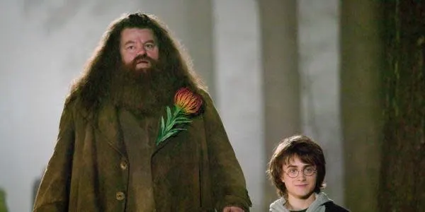
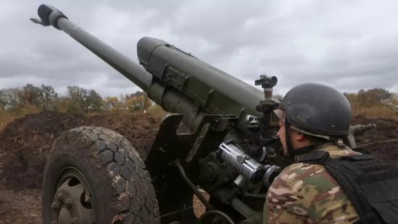

Bienvenidos al Peridico Vision77
En este periodico se abordarán las últimas problemáticas mundiales
En este periodico se abordarán las últimas problemáticas mundiales
Robbie Coltrane, un veterano cómico y actor nacido en Escocia conocido por sus papeles estelares en la serie británica Cracker y la franquicia de películas de Harry Potter, ha fallecido, de acuerdo a información de su agencia WME proporcionada en exclusiva a The Hollywood Reporter. El histrión mejor recordado por su entrañable personaje Ser Hagrid, tenía 72 años.
Es rey desde el momento de la muerte de su madre, pero no tendrá corona hasta el próximo seis de mayo. El palacio de Buckingham ha anunciado este martes la fecha de la ceremonia que se celebrará en la abadía de Westminster y en la que Carlos III recibirá los símbolos de su reinado entre los que también está el cetro y el orbe.

El líder designado por Rusia en Jersón, Vladimir Saldo, pidió este jueves a los civiles que evacúen esta región en el sur de Ucrania. Saldo citó como motivo los ataques diarios con cohetes de las fuerzas ucranianas, que están avanzando en la zona.
